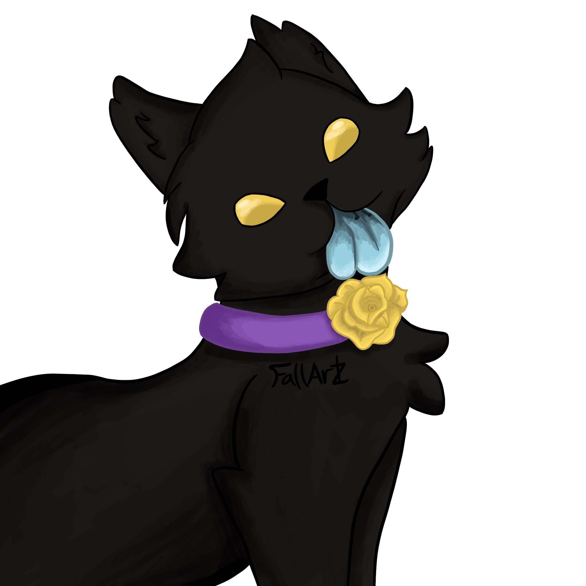
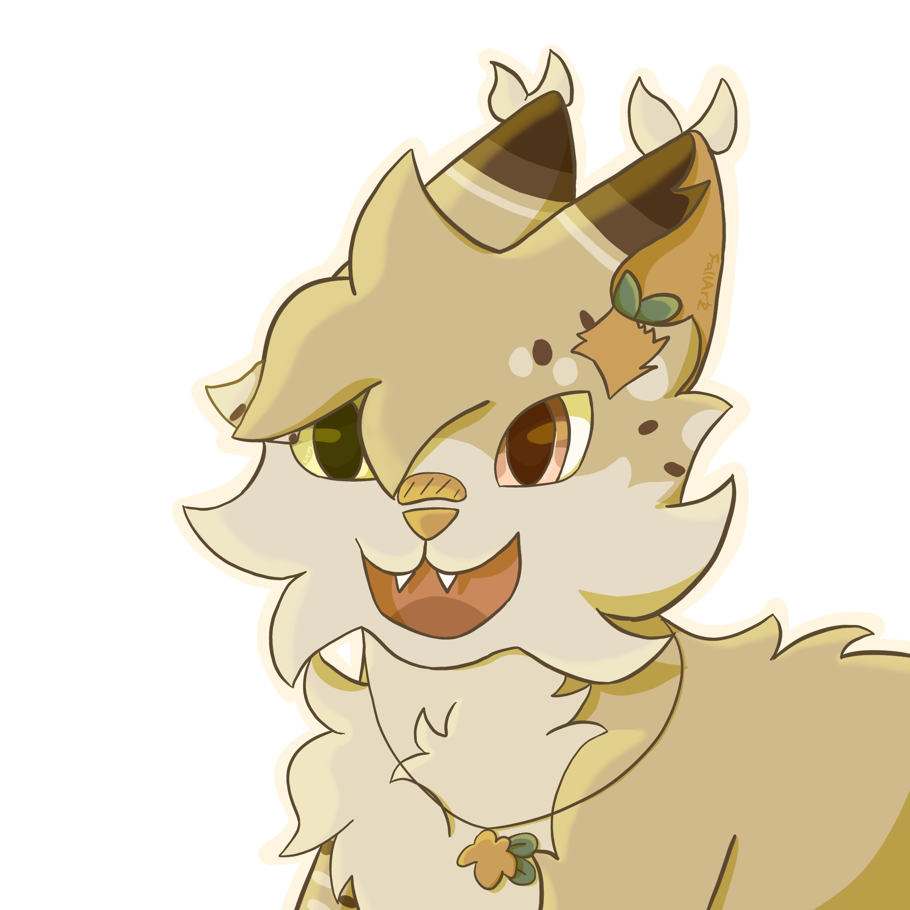
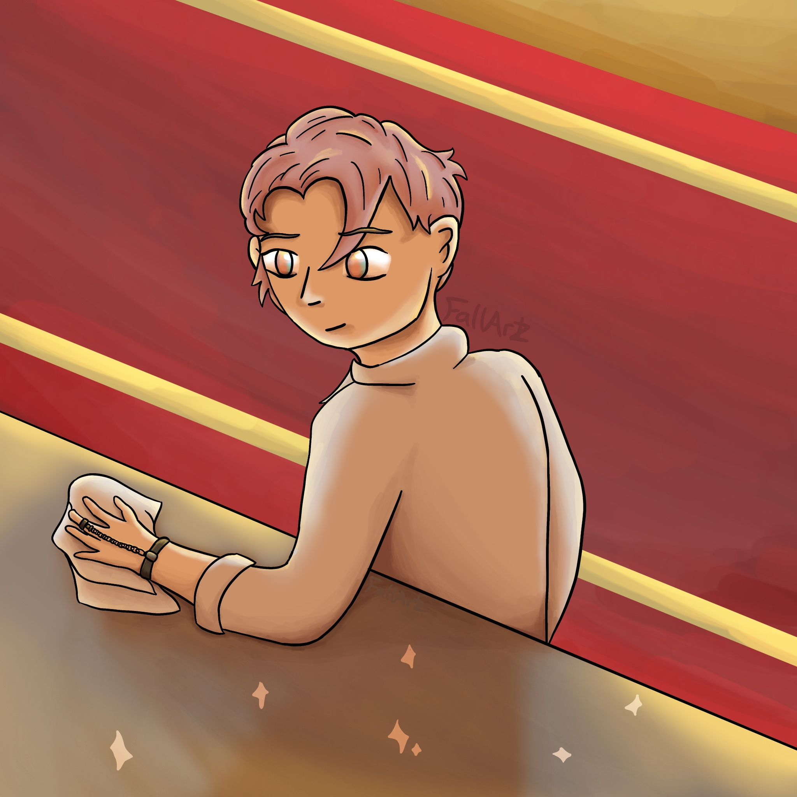
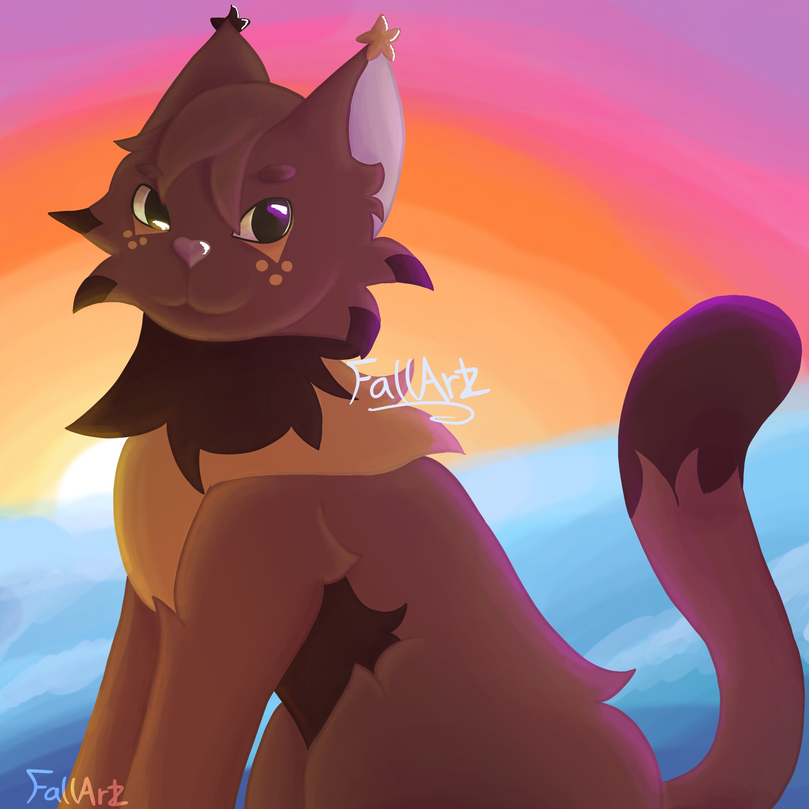
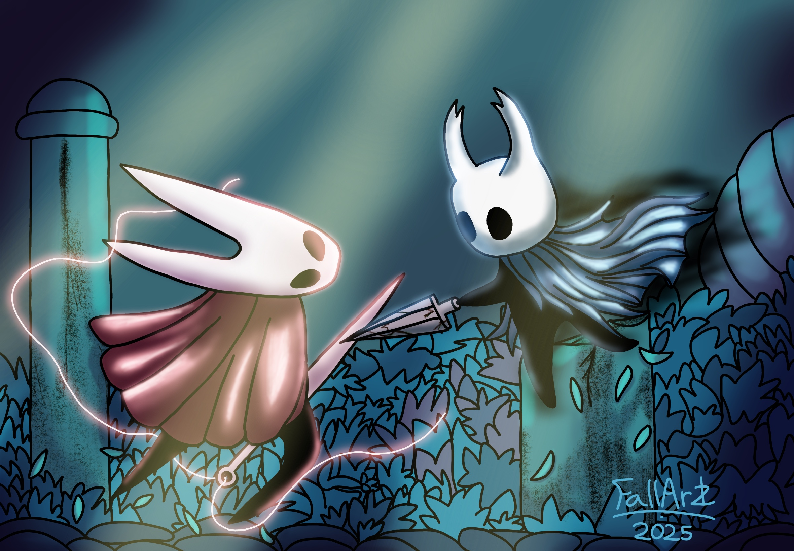
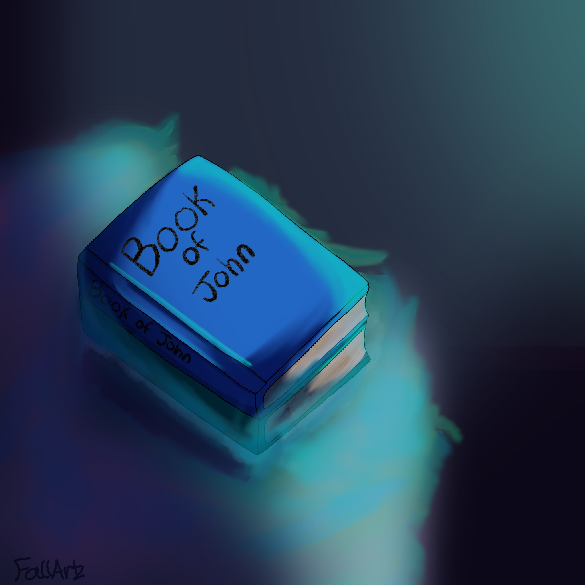
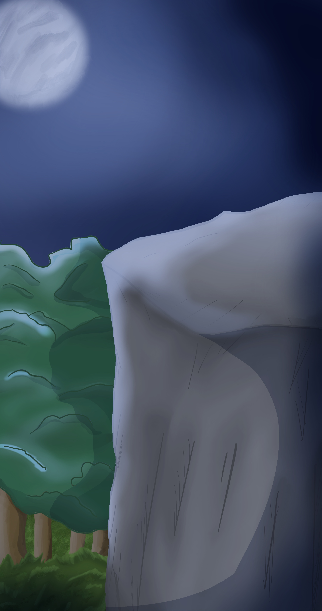
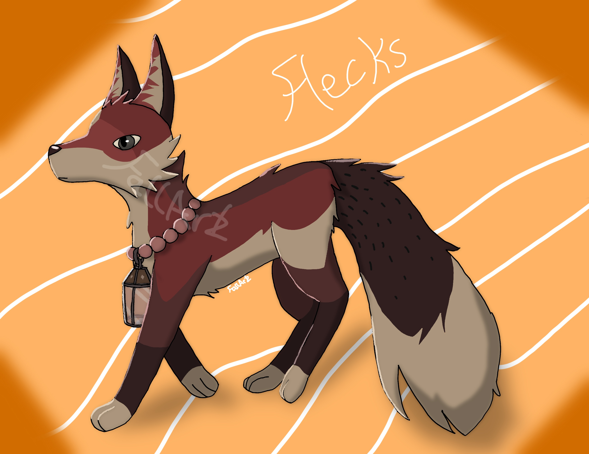

Mystery
This artwork was drawn as an Artfight attack! The character does not belong to me but the design is awesome.

Owltuft
Owltuft was born of one of my first art trades, and has been the last ever since. I'm not very good with art trades, commitment, and procrastination.

Koi Kalatzler
I drew this as another Artfight attack :) Essentially a gift for a really awesome person. At the time of creation I was very proud of this artwork, I had put extra effort into it! Now I have since improved and can see the flaws. Not so proud anymore.

Firecracker
Another Artfight attack! I am still proud of this artwork because the style in which I did it looks wonderful. Even I don't believe I could possibly recreate this. All in all Firecracker was an experiment gone well.

Hornet and The Knight
I drew this a long while back, especially in my Hollow Knight era. I still love Hollow Knight, but am currently obsessed with other things. This is one of my proud works as it may be the artwork I've spent the most time on in all my art years.

The Book of John
I drew this as a gift for my friend, John, for their birthday. It's amazing. John's amazing. Find their Artfight here.

Cliff
At the start of 2026, this was designed for my animation assignment. The animation itself was not exactly amazing, but I like the background. Probably one of the only backgrounds I have ever drawn.

Flecks
One of my early Artfight attacks and it still looks good, even now. It was drawn in 2024. I am proud of it. Not much else to say.
You've reached the end of the gallery and likely the website too :) Thanks for taking the time to check everything out!!! Have a good day / afternoon / evening / night. - Kiri